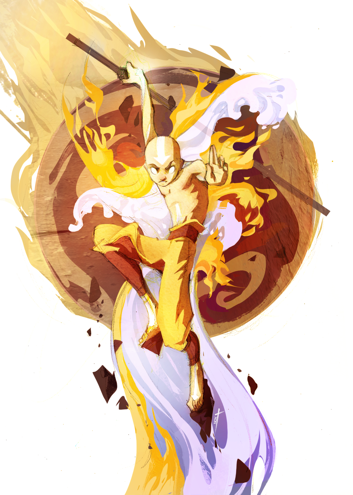

Aang was a male Air Nomad born in 12 BG and the Avatar during the century-long conflict known as the Hundred Year War. His immediate predecessor was Avatar Roku, and his immediate successor is Avatar Korra. As the Avatar of his time, he was the only person capable of using all four bending arts: airbending, waterbending, earthbending, and firebending. He was also one of a select few Avatars, and one of the first in many cycles to learn the ancient art of energybending, and the first Avatar known to have actively used the technique.
Shortly before the beginning of the Hundred Year War, Aang was frozen in an iceberg for a hundred years; he later emerged, still biologically twelve years old, into a world engulfed by war. During his absence, the Fire Nation had waged war upon the other nations and managed to completely wipe out the pacifistic Air Nomads. It fell to Aang, the last airbender and the Avatar, to end the War by mastering the other three elements and defeating Fire Lord Ozai. He remained a kind and goofy kid at heart throughout his year-long struggle, despite the overwhelming loss of his people and the heavy burdens he was forced to bear. After his victory over the Phoenix King, Aang began a romantic relationship with his close friend, Katara. The couple eventually married and raised a family of three children: Bumi, a nonbender who became an airbender later in life, Kya, a waterbender, and the youngest, Tenzin, an airbender.
Aang was always able to excel at any new bending moves he learned; at the age of six, he was a better airbender than children twice his age, and by the age of ten, Aang had proven himself to be better than his own teachers. He earned airbending tattoos and the status of an airbending master by the age of twelve for exhibiting prodigious talent with his native element and with his invention of the air scooter, making him the youngest airbending master in Air Nomad history.